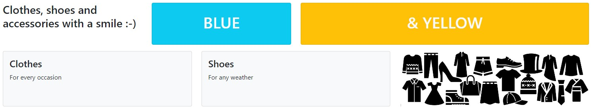

Assignment
- Create an HTML file called index.html and open it in a browser and in VS Code.
- Add the HTML structural elements doctype, html, head and body using Emmet Abbreviations in VS Code.
- Link in the Bootstrap 5 CSS file by using an HTML link element in index.html.
- Add elements to the HTML file and style them with Bootstrap classes in order to achieve the layout in the following picture:

Rules:
- The page must be styled entirely using Bootstrap classes. Do not add any other external, internal or inline CSS.
- The text in the upper left corner should be inside a paragraph element.
Tips:
- Remember that an element can be assigned to more than one class (e.g. class="some-class some-other-class").
- The image for the picture in the bottom left corner is provided in the images directory alongside these instructions.